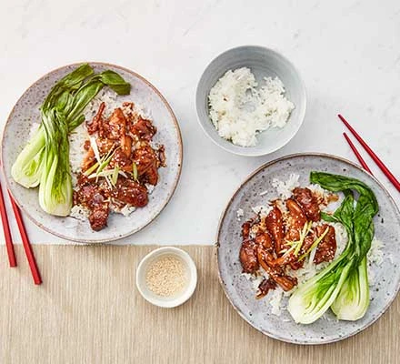

Teriyaki Recipe
Go back.

Description:
Try this easy, sticky Asian-style teriyaki chicken for a speedy weeknight supper – it takes just 20 minutes to make! Serve it with sticky rice and steamed greens.
Ingredients
- Sesame Oil
- 6 Boneless chicken thighs
- 2 Garlic Cloves
- Ginger
- Honey
- Soy Sauce
- Rice wine vinegar
- Sticky Rice
Steps:
- Heat the oil in a non-stick pan over a medium heat. Add the chicken and fry for 7 mins, or until golden. Add the garlic and ginger and fry for 2 mins. Stir in the honey, soy sauce, vinegar and 100ml water. Bring to the boil and cook for 2 - 5 mins over a medium heat until the chicken is sticky and coated in a thick sauce.
- Scatter over the spring onions and sesame seeds, then serve the chicken with the rice and steamed veg.